Couverture et réparation de toiture
Remplacement de tuiles cassées, reprise de fuites, réfection partielle ou totale. Tuiles, ardoise et zinc.
Couvreur à Clamart · Hauts-de-Seine & Île-de-France
Réparation, rénovation et entretien de toiture, zinguerie, isolation et étanchéité. Un interlocuteur unique, des conseils honnêtes et un chantier livré propre.
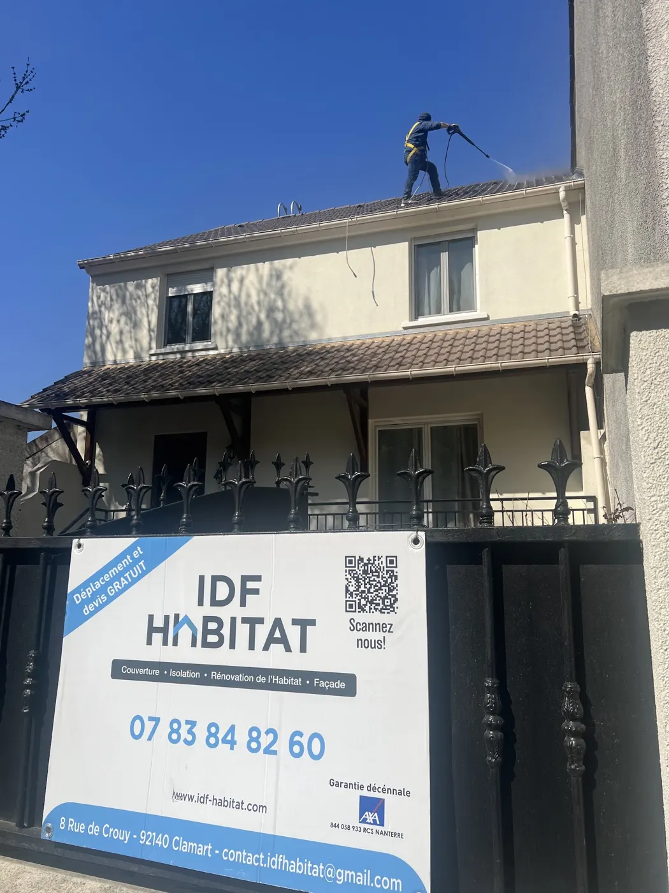
Prestations
Nous intervenons sur maisons individuelles et petits collectifs, en réparation urgente comme en rénovation complète.
Remplacement de tuiles cassées, reprise de fuites, réfection partielle ou totale. Tuiles, ardoise et zinc.
Pose, remplacement, réparation et nettoyage de gouttières et descentes d'eau.
Isolation thermique et aménagement de combles pour plus de confort, été comme hiver.
Toits plats, terrasses, acrotères et points singuliers traités durablement.
Installation et remplacement de Velux, avec raccords d'étanchéité adaptés.
Nettoyage, traitement hydrofuge et coloration pour redonner de l'éclat à votre toiture.
Pose à sec, bandes de rive en zinc ou scellement traditionnel avec crêtes de coq.
Diagnostic et traitement préventif ou curatif contre insectes et champignons.
Habillage des débords de toit, sous-faces et rénovation extérieure.
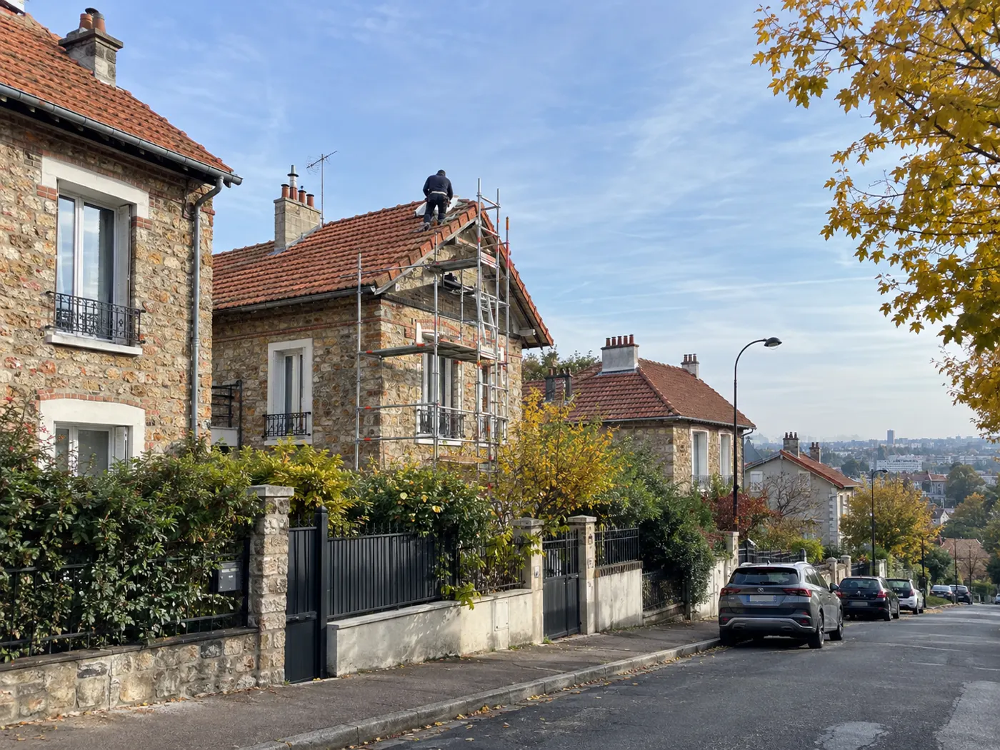
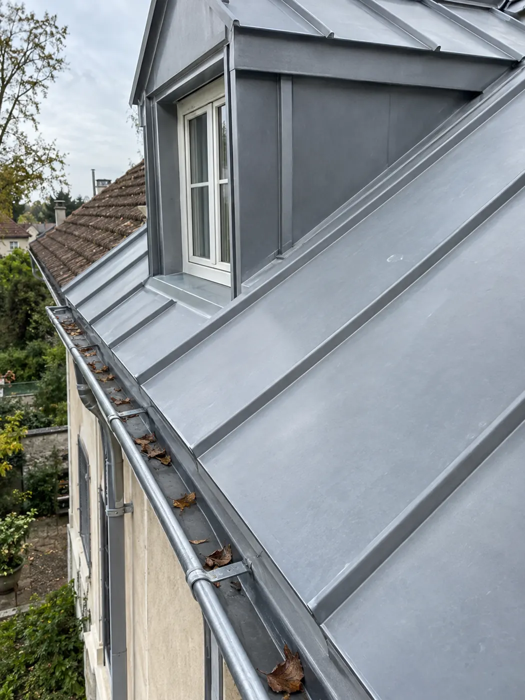
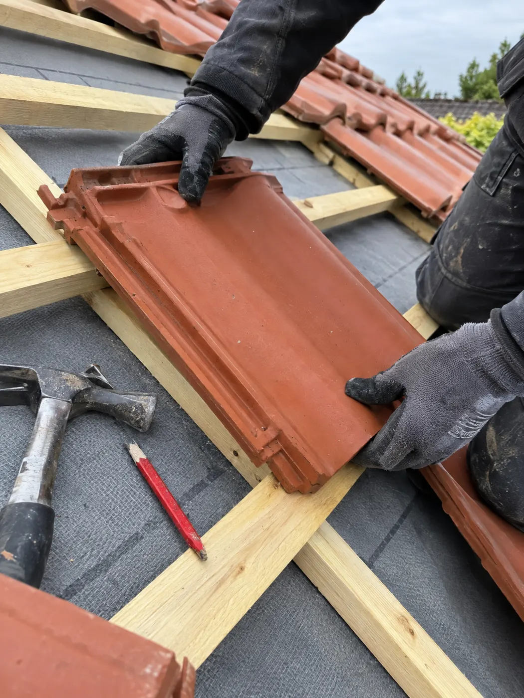
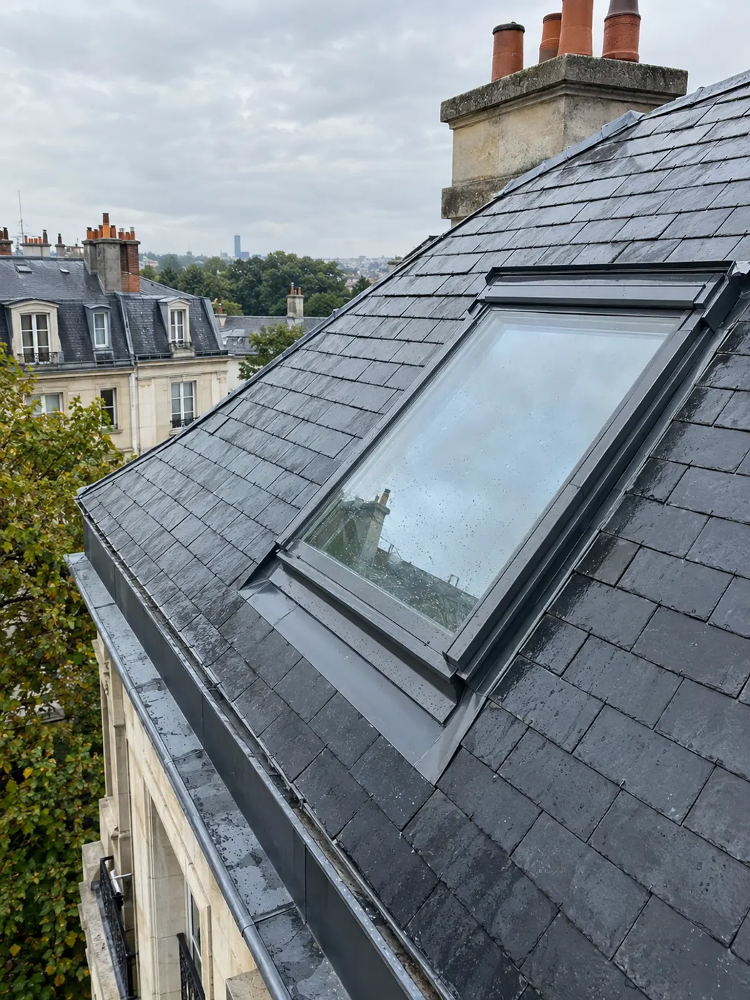
Réalisations
Photos prises sur nos chantiers en Île-de-France, telles que publiées sur notre fiche Google.
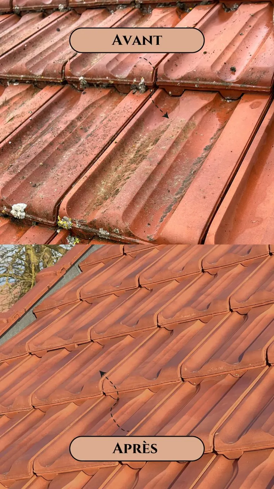
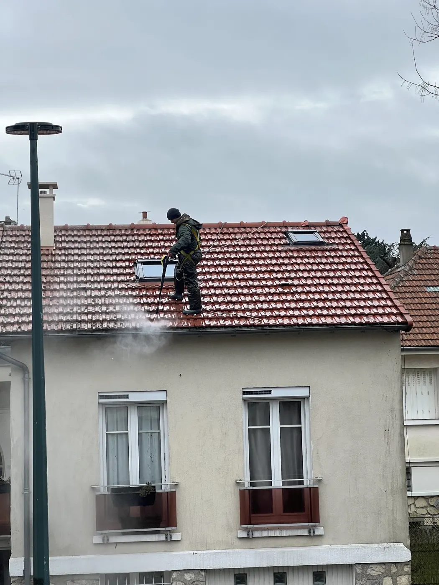
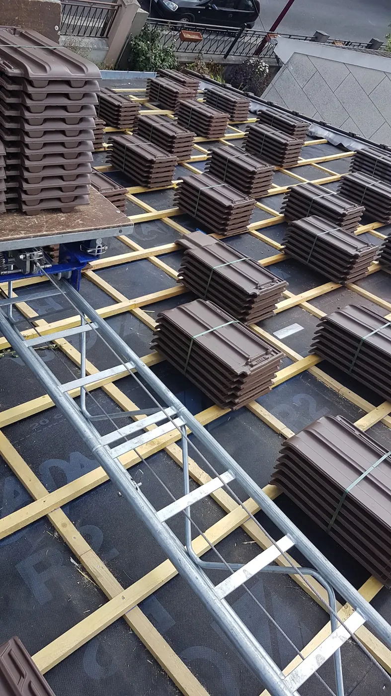
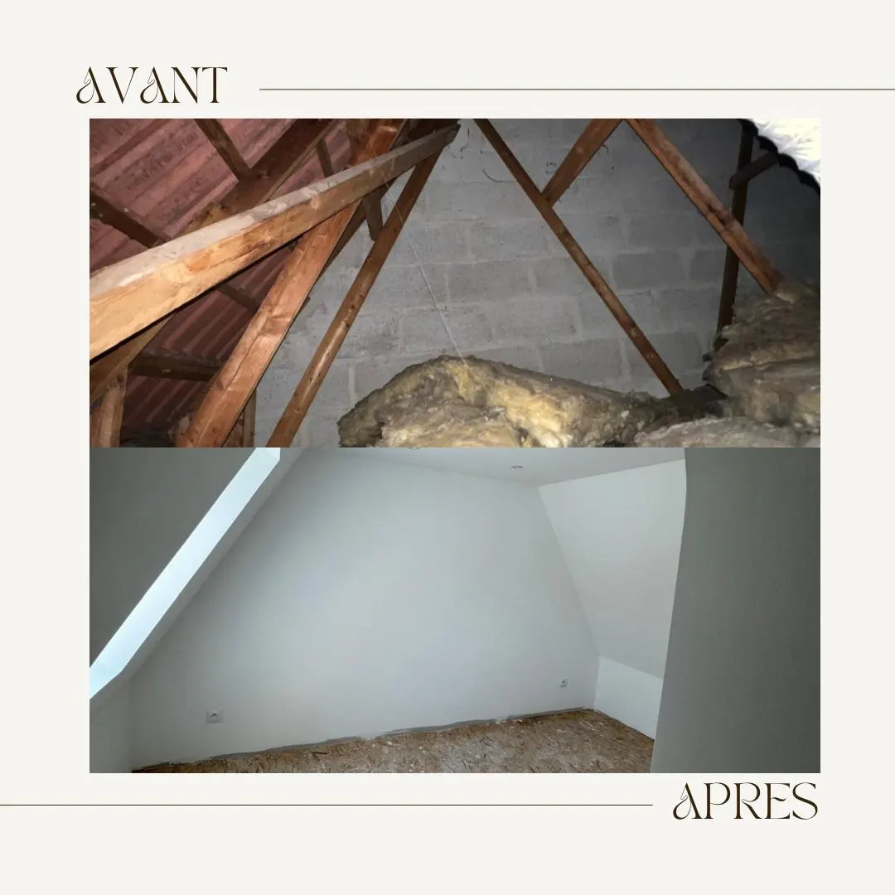
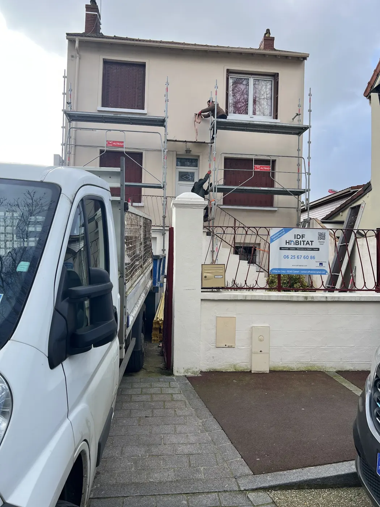
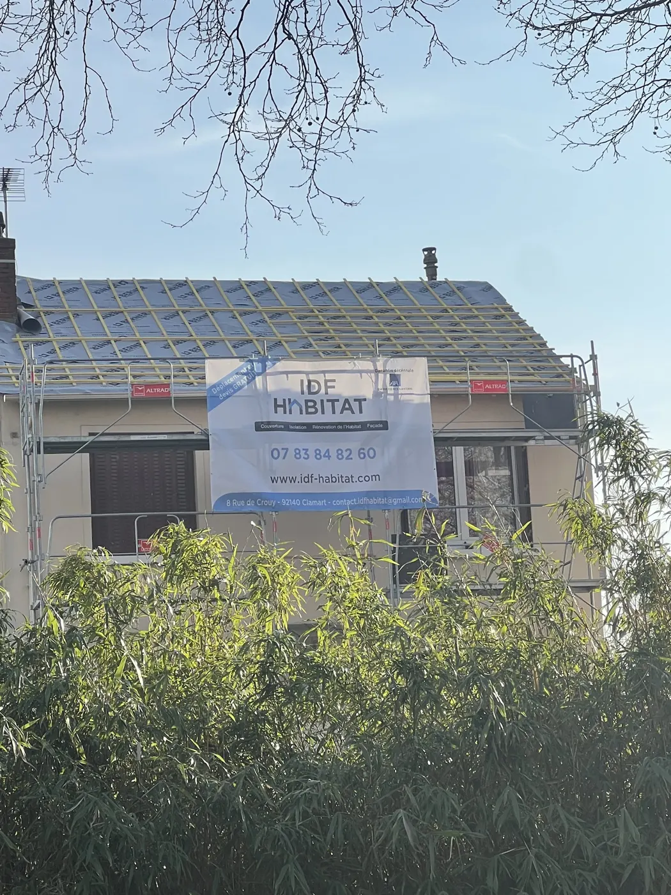
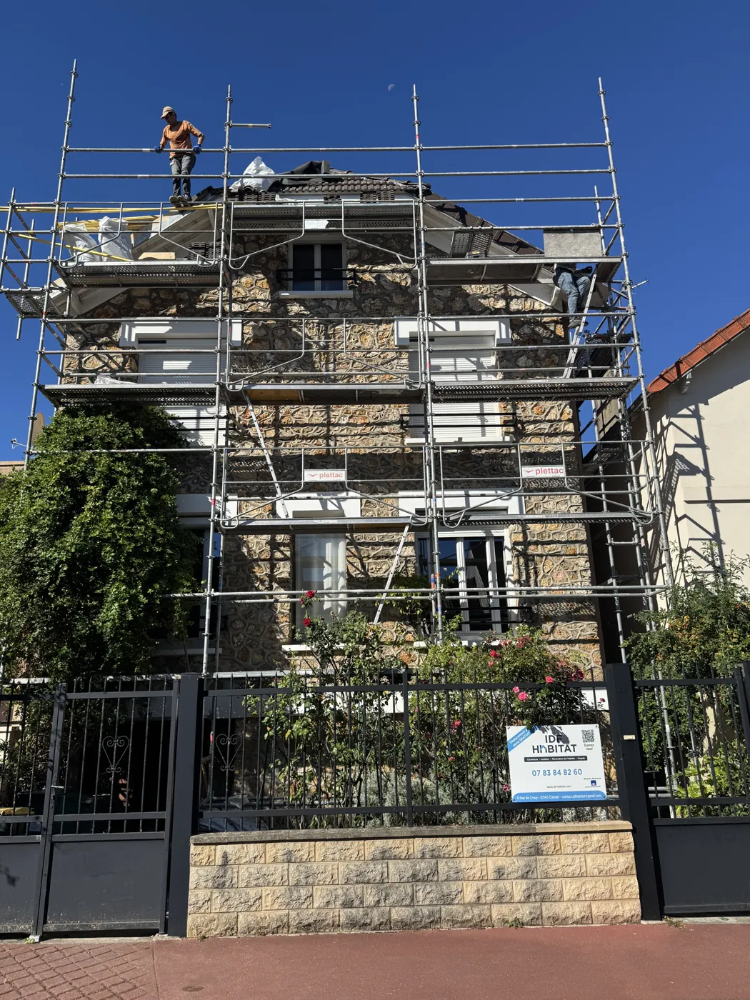
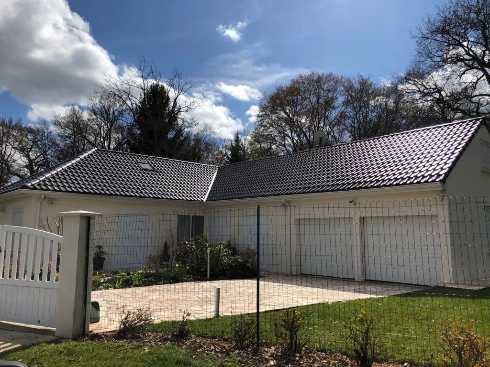
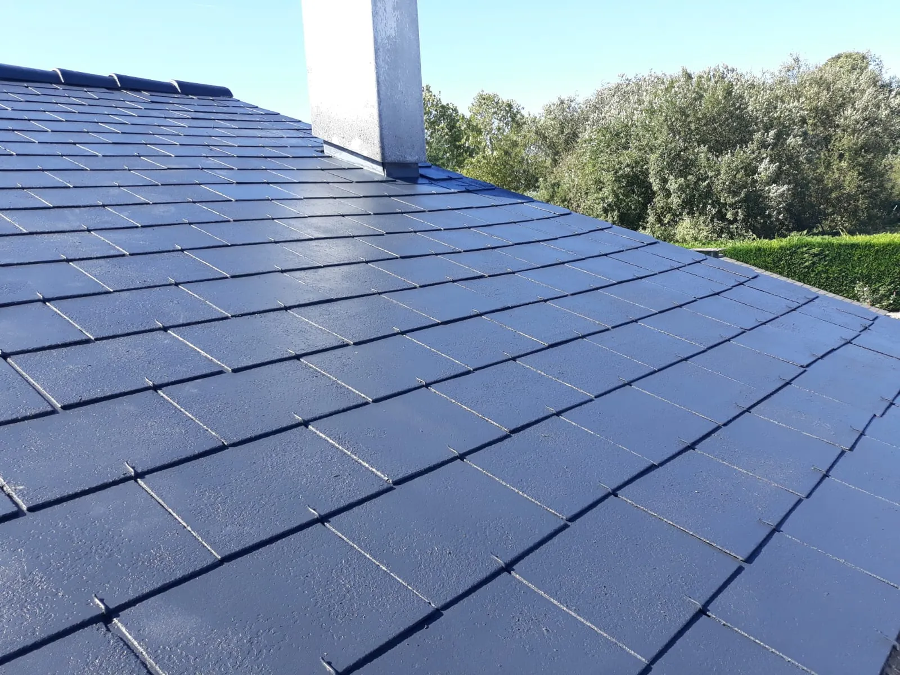
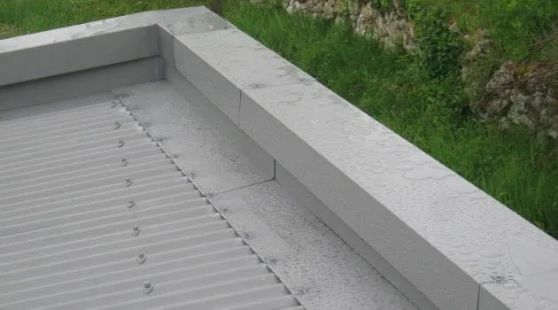
En vidéo
Quelques interventions récentes, du nettoyage d'une toiture au remplacement complet d'une couverture.
Comment ça se passe
Par téléphone, e-mail ou via le formulaire. On vous rappelle rapidement.
Nous inspectons la toiture, photos à l'appui, et vérifions la faisabilité technique.
Matériaux, quantités et main-d'œuvre clairement chiffrés. Vous décidez sans pression.
Chantier réalisé dans les délais annoncés, nettoyé et contrôlé avec vous.
Avis clients
★★★★★« Professionnalisme et qualité au rendez-vous ! J'ai fait appel à IDF Habitat pour des travaux de toiture à Clamart. Réactif, compétent et très professionnel : ils ont su me conseiller avec transparence et réaliser les travaux dans les délais annoncés. »
★★★★★« Très bons professionnels (dirigeants et couvreurs). Nous n'avons pas eu de mauvaises surprises. Travaux effectués proprement et sans retard. Les tarifs sont au juste prix. »
★★★★★« Très satisfaite du travail. Chantier mené avec sérieux et professionnalisme, et le suivi a été impeccable du début à la fin. Je recommande ! »
★★★★★« Très bonne société, contact agréable, aucun problème sur les délais. Le dirigeant est vraiment à l'écoute. »
★★★★★« Entreprise qui vient de remplacer chez moi des velux et refaire une partie du toit. Bon dialogue et explications des travaux, en respectant le timing annoncé. »
★★★★★5/5 Note moyenne sur 25 avis Google Lire tous les avis →« Entreprise très professionnelle et de bonne compétence que je conseille autour de moi. Devis raisonnable, travail soigné. »
Zone d'intervention
Nous intervenons dans les Hauts-de-Seine, les Yvelines, l'Essonne, le Val-de-Marne, la Seine-Saint-Denis et à Paris. Votre ville n'est pas listée ? Appelez-nous, nous nous déplaçons.
07 83 84 82 60Questions fréquentes
Oui. Le déplacement, l'inspection de la toiture et le devis sont gratuits et sans engagement.
Appelez-nous directement au 07 83 84 82 60. Nous faisons le maximum pour sécuriser la toiture au plus vite, puis nous chiffrons la réparation durable.
Une inspection et un nettoyage des gouttières sont conseillés une fois par an, idéalement après la chute des feuilles. Un démoussage tous les 5 à 10 ans selon l'exposition prolonge la durée de vie des tuiles.
Nous intervenons sur tuiles mécaniques et plates, ardoise, zinc et toits plats (étanchéité).
L'adresse du chantier, une description du problème et, si possible, quelques photos. Cela nous permet de venir avec le bon matériel.
Devis gratuit
Nos devis et nos déplacements sont gratuits. Nous vous recontactons rapidement pour fixer une visite.